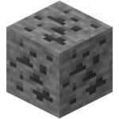
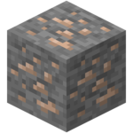
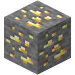
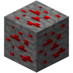
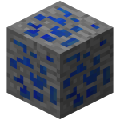
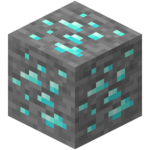
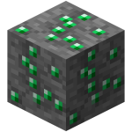
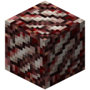

-

Minério de carvão
É possível encontrar esse minério nas superfícies dos biomas e até em camadas mais profundas. Sua utilidade principal é cozinhar alimentos e minérios brutos. Crafts com carvão : tocha, bloco de carvão.
-

Minério de ferro
É possível encontrar esse minério em um nível básico entre superficiais de cavernas e até camadas mais profundas, por meio da fornalha é possível obter a barra de ferro, que tem utilidade na fabricação de armaduras e equipamentos.
-

Minério de Ouro
É possível encontrar esse minério em um nível mais profunda das cavernas, por meio da fornalha é possível obter a barra de ouro, que tem utilidade na fabricação de armaduras e equipamentos. O minério de ouro não é muito recomendado para a utilização de equipamentos, visto que sua durabilidade é baixíssima.
-

Minério de Redstone
É possível encontrar esse minério em um nível mais profunda das cavernas, Sua principal utilidade é conduzir eletricidade, por meio dele é possível fazer circuitos complexos de redstone e blocos específicos de energia.
-

Minério de lapís-lazúle
É encontra nas camadas mais profundas das cavernas, sua utilidade é gerar encantamentos. O único craft que pode ser obtido é o bloco de lápis lazule.
-

Minério de diamante
É encontrado em um nível mais profundo das cavernas, ao se coletar é possível fazer equipamentos como armaduras e estante de encantamentos, o quais são itens muito uteis para se ter um bom progresso no game, sua durabilidade de equipamento é muito alta e sua raridade maior ainda.
-

Minério de esmeralda
É encontrado em um nível mais profundo das cavernas, ao se coletar é possível ser trocado como moeda pelos villages, que oferecem equipamentos em troca de esmeraldas, seu único craft é o bloco de esmeralda, que pode utilizado para gerar energia no biccon.
-

Minério de quartz
O minério de quartz só é possível ser encontrado no nether, sua utilidade é unitária para a fabricação de blocos e estruturas.
-
Coal Ore
Coal ore: It is possible to find this ore on the surfaces of biomes and even in deeper layers. Its main utility is to cook food and raw ores. Charcoal crafts: torch, coal block.
-
Iron Ore
It is possible to find this ore at a basic level between cave surfaces and even deeper layers, through the furnace it is possible to obtain the iron bar, which is useful in the manufacture of armor and equipment.
-
Gold ore
It is possible to find this ore in a deeper level of the caves, through the furnace it is possible to obtain the gold bar, which is useful in the manufacture of armor and equipment. Gold ore is not highly recommended for the use of equipment, since its durability is very low.
-
Redstone ore
It is possible to find this ore at a deeper level of the caves. Its main use is to conduct electricity, through which it is possible to make complex circuits of redstone and specific blocks of energy.
-
Lapis lazuli ore
Is found in the deepest layers of the caves, its use is to generate enchantments. The only craft that can be obtained is the blue pencil pad.
-
Diamond ore
Found in a deeper level of the caves, when collecting it is possible to make equipment such as armor and enchantment shelves, which are very useful items to make a good progress in the game, its equipment durability is very high and its even rarer.
-
Emereld ore
it is found in a deeper level of the caves, when collecting it is possible to be exchanged as currency by the villages, which offer equipment in exchange for emeralds, their only craft is the emerald block, which can be used to generate energy in the biccon.
-
Quartz ore
Quartzz ore can only be found in the nether, its utility is unitary for the manufacture of blocks and structures